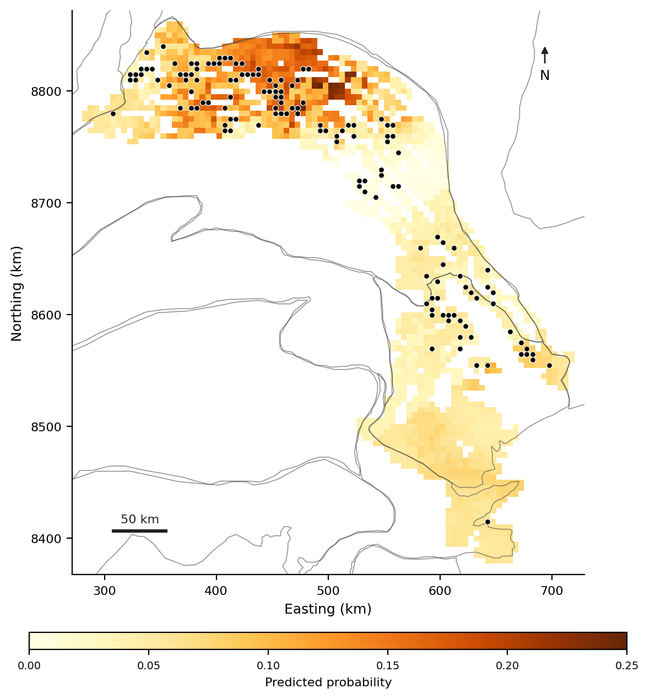
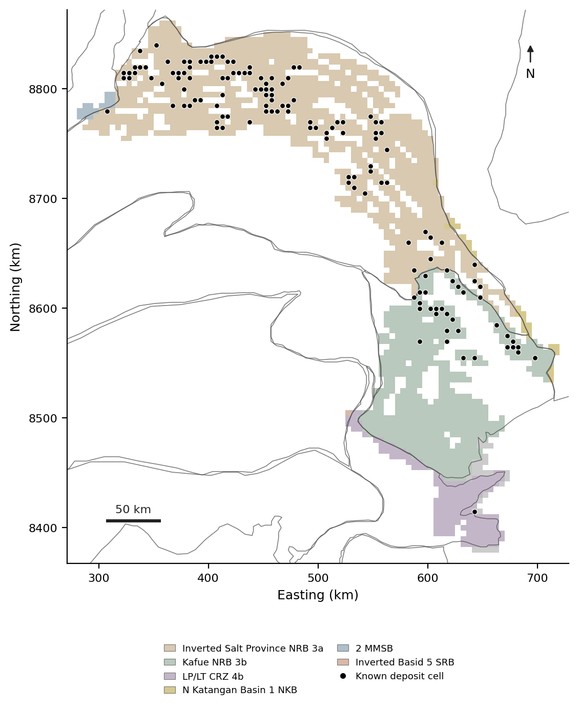
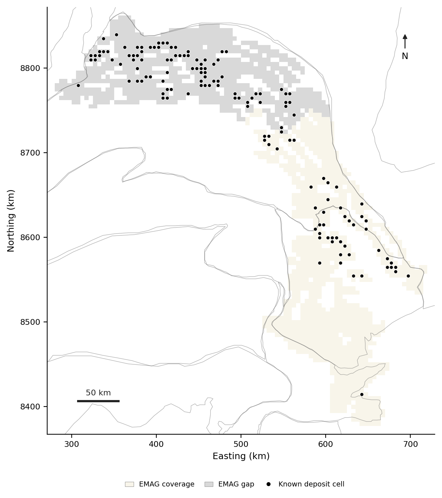

DATA
Data and Maps
Derived grid, model output, and map figures for the Copperbelt prospectivity project.
Version 1 · 11 November 2026 · EPSG:32735
Predicted probability

The surface is highest in the northern part of the grid, where most known deposits are. It is a screening surface, not a drill target map.
Grid and tectonic domains

The grid is the support of the claim, not the geological boundary. The domain assignment is an interpretation; the boundaries are not facts.
Aeromagnetic coverage

819 of 1,899 cells are in the nodata footprint. The coverage boundary is an observation-process boundary, not a geological one.
Grid v1
copperbelt_grid_v1.csv · 1,899 rows · 9 fields · 188 KB
| Field | Description |
|---|---|
| id | Grid cell identifier |
| centroid_x | Cell centroid easting, metres (EPSG:32735) |
| centroid_y | Cell centroid northing, metres (EPSG:32735) |
| domain | Daly et al. tectonic domain assigned to the cell |
| deposit_count | Number of known deposits in the cell (0–5) |
| deposit_present | 1 if deposit_count > 0, else 0 |
| emag_gap | 1 if the cell is in the EMAG2v3 nodata footprint, else 0 |
| predicted_probability | V9 predicted probability of at least one deposit |
| uncertainty_std | Posterior standard deviation of the predicted probability |
Metadata
| Item | Value |
|---|---|
| CRS | EPSG:32735 (WGS 84 / UTM zone 35S) |
| Cell size | 5,000 m |
| Grid | 1,899 cells |
| Positive cells | 139 (7.32%) |
| Deposit records | 184 |
| EMAG2v3 gap | 819 cells; 91 of 139 positive cells |
| Extent | 280,140–720,140 m E; 8,377,300–8,862,300 m N |
| Model | V9 spatial model |
| Version | v1, 11 November 2026 |
Sources
- USGS Scientific Investigations Report 2010-5090-T, Central African Copperbelt GIS data (deposits, prospects, permissive tracts).
- Daly et al. (2025), Tectonics: Katangan Basin tectonic domains.
- EMAG2v3, NOAA/NCEI: upward-continued magnetic anomaly grid.
- V9 model output: predicted probability and posterior uncertainty per cell.
The 139 positive cells contain at least one known deposit; the 184 deposit records count multiple deposits within a cell. The negative class is “no known deposit,” not “barren.” Derived data are shared for review and reuse; cite this page and the original sources.